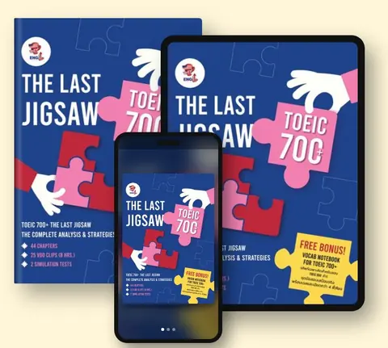

Special Price!

เหลืออีก100เล่ม
490.-ปกติ 690.-
TOEIC The Last Jigsaw
วิเคราะห์ทุก Part ถึงแก่น พร้อมเทคนิคสู่ 700+
จำนวนบทเรียน44บท
คลิปเสริม25คลิป
Simulation Test2ชุด
ความยาวคลิป10+ชั่วโมง

วิเคราะห์ทุก Part ถึงแก่น พร้อมเทคนิคสู่ 700+
กรอกอีเมล แล้วกดยืนยันในอีเมลที่เราส่งไป · กดแล้วเปิดอ่านได้ทั้งเล่มทันที (เปิดซ้ำได้จากลิงก์เดิม)